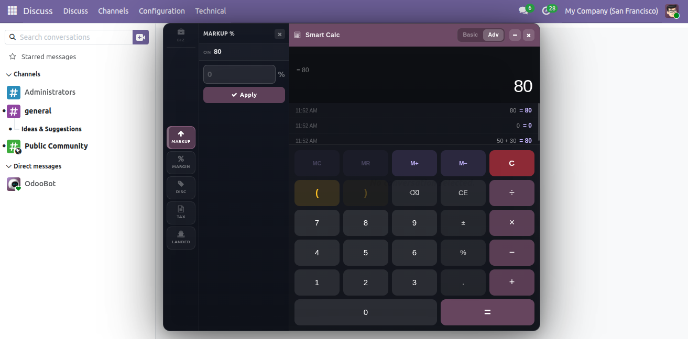
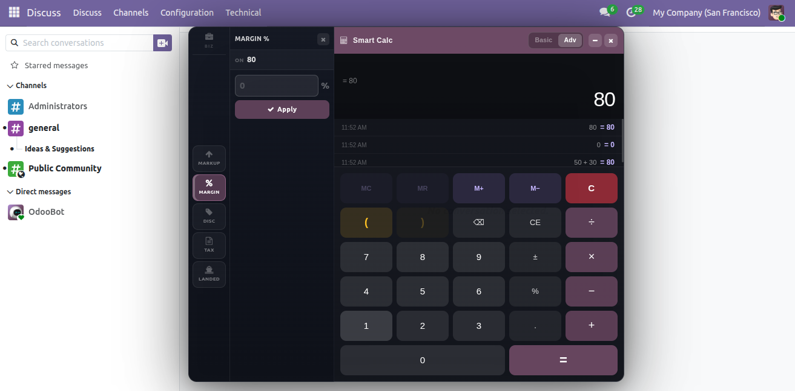
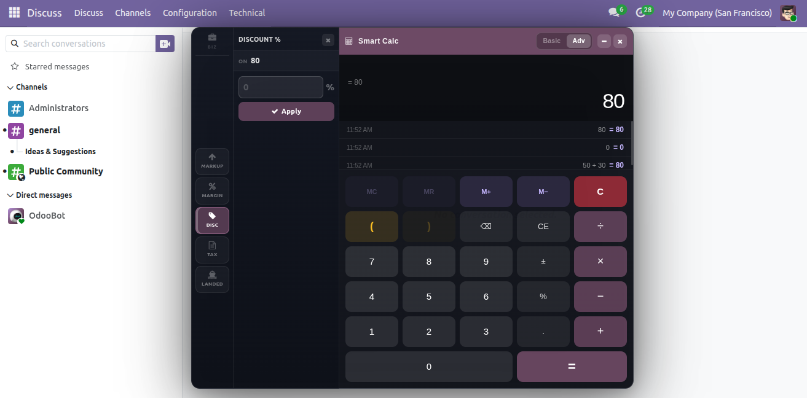
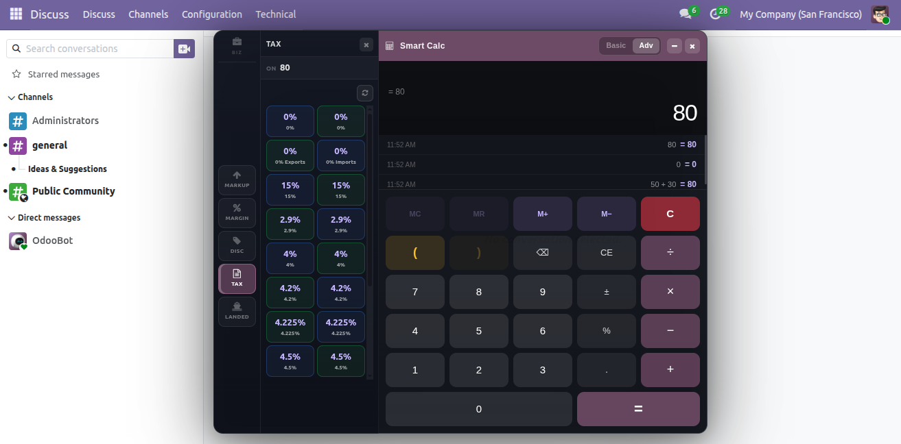
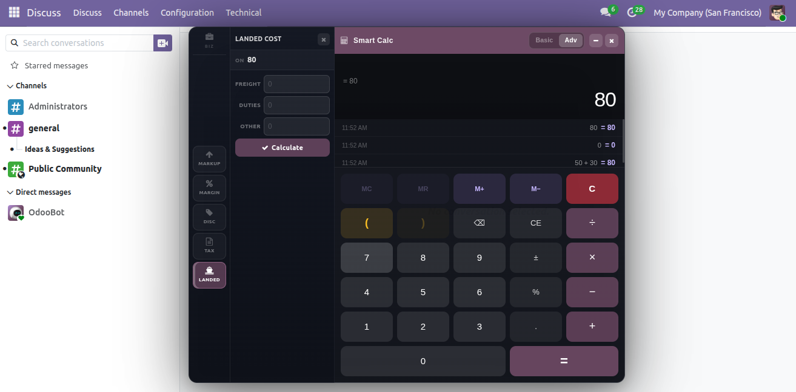

A production-ready floating calculator for the Odoo backend: core arithmetic with Basic and Advanced layouts,
timestamped history, and a dedicated Business rail for markup, margin, discount, tax helpers,
and landed-cost style workflows-all inside one draggable shell that tracks keyboard shortcuts power users expect.
Pro builds on Smart Calculator Adv and pairs with Accounting when you want tax data wired from your chart,
while keeping day-to-day math one keystroke away from any backend screen.
At a glance
Toggle visibility anywhere in the backend with the ` (backtick) shortcut.
Basic and Adv modes share one refined header-no bulky extra chrome.
Biz strip opens after you evaluate: Markup, Margin, Discount, Tax, Landed-with expandable detail pane.
Calculator anchored over a typical backend view: floating shell, readable display,
history tape optional below when you have entries.
Same workflow context highlighting instant open with ` and dismiss with Esc
without losing your place on the underlying form or list.
Modes & advanced keypad

Basic mode: compact grid aligned with quick operational math inside Odoo screens.

Adv mode: brackets, MC/MR/M+/M-, meta badges for memory and open parentheses,
matching heavy spreadsheet-style sessions.
Business rail & expandable workspace
After =, the Biz rail reveals icon shortcuts (Markup, Margin, Discount, Tax, Landed)
beside the keypad-starting narrow so normal math stays unobstructed.

Expanded Biz pane: header shows the active operation, base amount (“on …”), scrollable inputs,
pinned results footer-ideal for pricing desks quoting off Odoo figures.
Tax & landed-cost style flows

Tax workflow preview when Accounting configuration is present-rates surfaced where the module wires them,
keeping auditors happy without hopping tabs mid-call.

Landed / composite costing helper illustrating layered inputs (freight, duty, extras)
distilled into one actionable total beside your Odoo records.
Upgrade path: install Smart Calculator Pro when you need the Biz rail (markup, margin, discount, tax, landed cost) layered on top of these modes.
Installation & Support
Odoo edition
Designed for Odoo 19 backend (web assets pipeline).
Dependencies
bvs_smart_calculator_adv, web, account.
Installation path
Add the addons directory containing bvs_smart_calculator_pro, update Apps list, install Pro-Adv and base calculator modules resolve automatically.